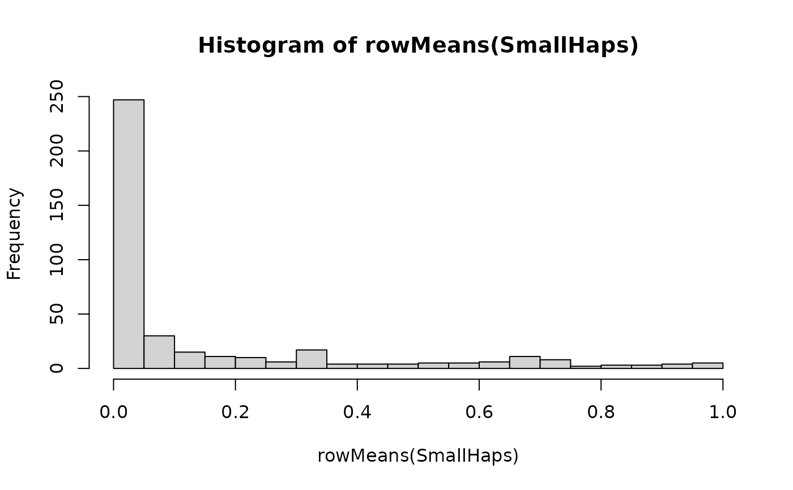

Small example phased haplotype dataset and recombination map
Source:R/SmallHaps-data.R
SmallHaps.RdSimulated dataset with \(N=300\) haplotypes at \(L=400\) variants generated using msprime (Kelleher et al., 2016), together with the recombination map.
Format
For SmallHaps, an object of class matrix of dimensions \(400 \times 300\) where each column is a simulated haplotype.
This is suitable for passing directly to CacheHaplotypes().
For SmallMap, a vector of length 400 representing the recombination map for the SmallHaps data.
This can be used with CalcRho(), by converting to recombination distances using diff(SmallMap).
References
Kelleher, J., Etheridge, A. M., & McVean, G. (2016). Efficient coalescent simulation and genealogical analysis for large sample sizes. PLoS computational biology, 12(5).
Examples
data("SmallHaps")
# \donttest{
# Plot Allele Frequencies
hist(rowMeans(SmallHaps),breaks=20)

# }
# Import into kalis cache directly ...
CacheHaplotypes(SmallHaps)
#> Warning: haplotypes already cached ... overwriting existing cache.
data("SmallMap")
# Find parameters
pars <- Parameters(CalcRho(diff(SmallMap)))
pars
#> Parameters object with:
#> rho = (0.030722976221863, 0.00188322071638501, 6.79809190046651e-06, ..., 1.56898508137998e-05, 1.7924679243824e-05, 1)
#> mu = 1e-08
#> Pi = 0.00334448160535117